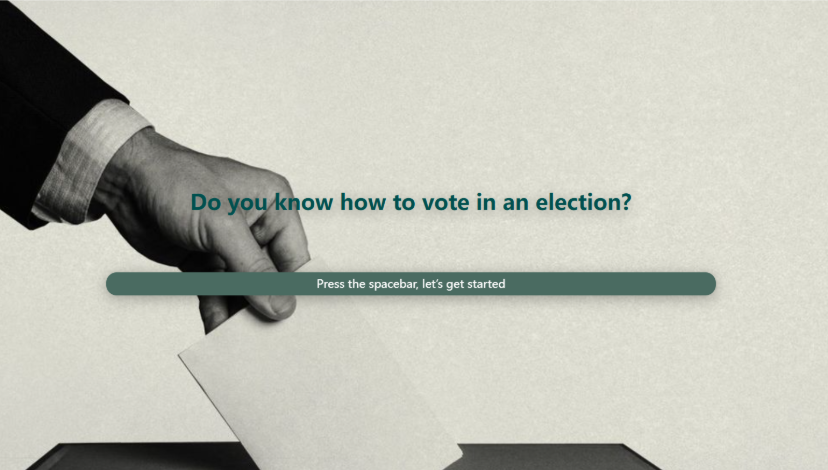

MY PORTFOLIO.
PROJECT 02
Interactive Voting Guide (Twine)
A nonlinear interactive guide built for new young voters and new citizens to learn the Irish voting system through a choice-based story.

Main interface of the Twine interactive story
This interactive prototype is designed to help first-time young voters and new citizens understand how voting works in Ireland. Instead of dry text instructions, users walk through a simulated voting journey and make different choices, easing their unfamiliarity and anxiety about voting.
I used Twine with SugarCube macros to manage variables, branching story paths and status tracking. The narrative covers voter registration rules, PPS requirements, and what to expect inside a polling station.

Branching story flow diagram


Setup in SugarCube